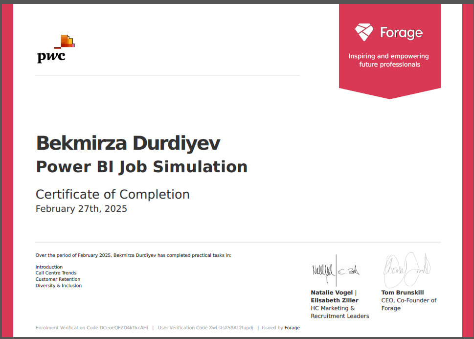

This Power BI Dashboard is designed to support the HR department of PwC Switzerland, leveraging real-time data to improve job performance and workforce management. The dashboard provides HR professionals with deep insights into employee performance, retention rates, and workforce efficiency.

This Road Accident Dashboard is built using Excel and visualizes key insights from accident data. The dashboard provides an interactive and structured view of casualties based on various factors such as vehicle type, road conditions, time of the accident, and accident severity.
This Excel-based project analyzes online store sales data, providing key insights into total revenue, product performance, outlet sales, and customer ratings.
This project focuses on cleaning and analyzing global layoff data using SQL and Excel to uncover key trends and patterns. The goal is to ensure data accuracy and provide meaningful insights.

This Page Directs to my Tableau public profile where I keep my all tableau projects
This Power BI Dashboard provides an interactive analysis of shipment data, offering dynamic visual insights into total sales, shipment volume, cost, and category-wise distribution.
This Power BI Dashboard provides real-time analytics for PwC Switzerland’s Call Center Department, offering key insights into answering quality, problem resolution, and agent performance.